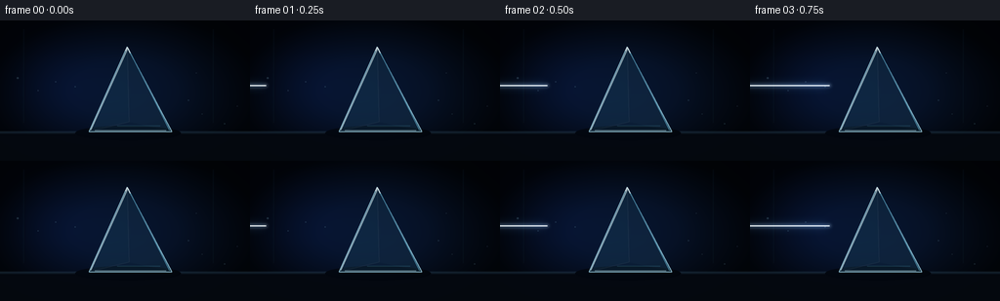
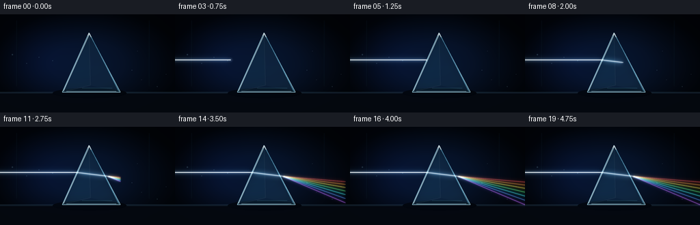
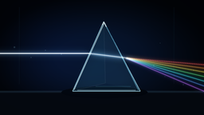

CODING AGENTS AS PIXEL WORLD MODELS
traex/GPT-5.6-Sol · phygen_086
点击播放 · 原生 RGB 像素
逐轮保存的候选
回放视频、检查图与代码变化。
每份候选均可单独播放。实际图片检查记录在下方工具轨迹中。
候选 01播放与检查图
点击播放 · 原生 RGB 像素


展开代码变化
--- 上一保存版本
+++ 本次保存版本
@@ -0,0 +1,198 @@
+from pathlib import Path
+import json, math
+import numpy as np
+from PIL import Image, ImageDraw, ImageFilter
+import artifact_io
+
+CASE_DIR = Path(__file__).resolve().parent
+SPEC = json.loads((CASE_DIR / 'task_spec.json').read_text())
+W, H = SPEC['width'], SPEC['height']
+N, FPS = SPEC['frames'], SPEC['fps']
+S = 4
+WS, HS = W*S, H*S
+
+# Main optical geometry, in final-frame pixel coordinates.
+PRISM = [(130, 27), (91, 114), (176, 114)]
+ENTRY = (112.2, 66.7)
+EXIT = (157.2, 72.2)
+RAINBOW = [
+ ((255, 70, 64), 82.0), # red is deviated least
+ ((255, 135, 44), 87.0),
+ ((255, 220, 63), 92.5),
+ ((83, 241, 112), 99.0),
+ ((56, 224, 238), 105.5),
+ ((75, 131, 255), 112.5),
+ ((165, 86, 255), 120.0), # violet is deviated most
+]
+
+def scpt(p): return (int(round(p[0]*S)), int(round(p[1]*S)))
+def ease(x):
+ x = max(0.0, min(1.0, x))
+ return x*x*(3.0-2.0*x)
+
+def alpha_over(base, overlay):
+ return Image.alpha_composite(base.convert('RGBA'), overlay.convert('RGBA'))
+
+def add_layer(base, layer, gain=1.0):
+ """Add emissive RGB while respecting a layer's alpha."""
+ a = np.asarray(base.convert('RGB'), dtype=np.float32)
+ b = np.asarray(layer.convert('RGBA'), dtype=np.float32)
+ strength = b[..., 3:4] / 255.0 * gain
+ out = np.clip(a + b[..., :3] * strength, 0, 255).astype(np.uint8)
+ return Image.fromarray(out, 'RGB').convert('RGBA')
+
+def line_layer(points, color, width, blur=0, alpha=255):
+ lay = Image.new('RGBA', (WS, HS), (0,0,0,0))
+ d = ImageDraw.Draw(lay)
+ d.line([scpt(p) for p in points], fill=(*color, alpha), width=max(1,int(width*S)), joint='curve')
+ if blur:
+ lay = lay.filter(ImageFilter.GaussianBlur(blur*S))
+ return lay
+
+def make_background(frame_idx):
+ yy, xx = np.mgrid[0:HS, 0:WS]
+ xn, yn = xx/WS, yy/HS
+ # Deep optical-lab blue-black with central blue haze and vignette.
+ glow = np.exp(-(((xn-.50)/.48)**2 + ((yn-.48)/.62)**2)*1.8)
+ side = np.exp(-(((xn-.18)/.30)**2 + ((yn-.45)/.65)**2)*2.0)
+ vign = np.clip(1.12 - .66*((xn-.5)**2/.25 + (yn-.5)**2/.25), .32, 1.0)
+ rgb = np.zeros((HS,WS,3), dtype=np.float32)
+ rgb[...,0] = (3.0 + 4.0*glow + 1.5*side)*vign
+ rgb[...,1] = (8.0 + 12.0*glow + 5.0*side)*vign
+ rgb[...,2] = (17.0 + 27.0*glow + 17.0*side)*vign
+ # Very subtle horizontal wall gradient.
+ rgb += (2.0*np.exp(-((yn-.72)/.34)**2))[...,None] * np.array([.25,.55,1.0])
+ return Image.fromarray(np.clip(rgb,0,255).astype(np.uint8), 'RGB').convert('RGBA')
+
+def draw_lab(base):
+ # Distant vertical panels, deliberately faint so the optics remain dominant.
+ lay = Image.new('RGBA', (WS,HS), (0,0,0,0)); d = ImageDraw.Draw(lay)
+ for x in (24, 218):
+ d.line([(x*S,9*S),(x*S,105*S)], fill=(35,69,92,24), width=S)
+ d.line([((x+1)*S,9*S),((x+1)*S,105*S)], fill=(2,7,15,50), width=S)
+ # Optical table and its illuminated top edge.
+ d.rectangle([(0,114*S),(WS,HS)], fill=(4,8,15,235))
+ d.rectangle([(0,114*S),(WS,116*S)], fill=(16,28,40,225))
+ d.line([(0,114*S),(WS,114*S)], fill=(75,116,141,60), width=S)
+ # Prism shadow.
+ d.ellipse([(77*S,108*S),(185*S,123*S)], fill=(0,2,5,150))
+ d.ellipse([(93*S,111*S),(177*S,118*S)], fill=(0,0,0,130))
+ base = alpha_over(base, lay)
+ # Fixed floating dust particles in the beam's general region.
+ dust = Image.new('RGBA',(WS,HS),(0,0,0,0)); dd=ImageDraw.Draw(dust)
+ pts=[(18,59,1.0),(39,72,.6),(57,63,.7),(77,68,.55),(193,82,.55),(207,96,.45),(230,106,.65),(243,88,.45),(201,54,.35)]
+ for x,y,r in pts:
+ dd.ellipse([((x-r)*S,(y-r)*S),((x+r)*S,(y+r)*S)], fill=(150,211,236,45))
+ return alpha_over(base,dust)
+
+def draw_spectrum(base, q):
+ if q <= 0: return base
+ q = ease(q)
+ x_end = EXIT[0] + q*(270-EXIT[0])
+ # A broad, dim spectral veil makes the fan read as dispersed light rather than colored wires.
+ veil = Image.new('RGBA',(WS,HS),(0,0,0,0)); vd=ImageDraw.Draw(veil)
+ for col, yfinal in RAINBOW:
+ y = EXIT[1] + (yfinal-EXIT[1]) * ((x_end-EXIT[0])/(270-EXIT[0]))
+ poly=[scpt(EXIT), scpt((x_end,y-1.8)), scpt((x_end,y+1.8))]
+ vd.polygon(poly, fill=(*col,15))
+ base = add_layer(base, veil.filter(ImageFilter.GaussianBlur(2.2*S)), .58)
+ # Each wavelength has a soft atmospheric halo and a narrow luminous core.
+ for idx,(col,yfinal) in enumerate(RAINBOW):
+ y = EXIT[1] + (yfinal-EXIT[1]) * ((x_end-EXIT[0])/(270-EXIT[0]))
+ p2=(x_end,y)
+ base=add_layer(base,line_layer([EXIT,p2],col,5.3,3.4,82),.64)
+ base=add_layer(base,line_layer([EXIT,p2],col,2.2,1.15,170),.88)
+ base=add_layer(base,line_layer([EXIT,p2],tuple(min(255,int(c*1.16+18)) for c in col),.72,0,225),.94)
+ # Bright shared exit point / tiny lens flare.
+ base=add_layer(base,line_layer([(154.2,72.2),(160.0,72.2)],(225,242,255),5.5,3.2,155),.75)
+ return base
+
+def draw_prism(base):
+ poly=[scpt(p) for p in PRISM]
+ # Glass body with a vertical cyan-tinted transmission gradient.
+ mask=Image.new('L',(WS,HS),0); ImageDraw.Draw(mask).polygon(poly,fill=255)
+ arr=np.zeros((HS,WS,4),dtype=np.uint8)
+ y=np.arange(HS)[:,None]/S
+ arr[...,0]=np.clip(18 + 6*(y/114),0,255)
+ arr[...,1]=np.clip(50 + 18*(y/114),0,255)
+ arr[...,2]=np.clip(72 + 32*(y/114),0,255)
+ arr[...,3]=np.asarray(mask)*0 + np.where(np.asarray(mask)>0,58,0).astype(np.uint8)
+ body=Image.fromarray(arr,'RGBA')
+ base=alpha_over(base,body)
+ # Face facets: dim asymmetric reflections give the solid glass volume.
+ facets=Image.new('RGBA',(WS,HS),(0,0,0,0)); fd=ImageDraw.Draw(facets)
+ fd.polygon([scpt(PRISM[0]),scpt(PRISM[1]),scpt((132,104))], fill=(93,194,226,12))
+ fd.polygon([scpt(PRISM[0]),scpt((132,104)),scpt(PRISM[2])], fill=(147,204,229,8))
+ fd.polygon([scpt((132,104)),scpt(PRISM[1]),scpt(PRISM[2])], fill=(20,69,93,15))
+ fd.line([scpt(PRISM[0]),scpt((132,104)),scpt(PRISM[1])], fill=(181,231,246,19), width=S)
+ base=alpha_over(base,facets)
+ # Soft outer glass aura and precise refractive edges.
+ edgeglow=Image.new('RGBA',(WS,HS),(0,0,0,0)); ed=ImageDraw.Draw(edgeglow)
+ ed.line(poly+[poly[0]], fill=(97,212,246,105), width=2*S, joint='curve')
+ base=add_layer(base,edgeglow.filter(ImageFilter.GaussianBlur(3*S)),.32)
+ edges=Image.new('RGBA',(WS,HS),(0,0,0,0)); e=ImageDraw.Draw(edges)
+ e.line(poly+[poly[0]], fill=(169,224,241,185), width=S, joint='curve')
+ e.line([scpt((130.4,29)),scpt((92.8,112.5))], fill=(230,253,255,150), width=S)
+ e.line([scpt((131,28.5)),scpt((173.5,112.5))], fill=(99,179,210,150), width=S)
+ e.line([scpt((97,112.7)),scpt((170,112.7))], fill=(193,232,243,110), width=S)
+ # Small apex glint and internal reflection on lower face.
+ e.line([scpt((128.4,31)),scpt((130.2,27.3)),scpt((133.0,33.2))], fill=(244,255,255,215), width=S)
+ e.line([scpt((120,108)),scpt((164,108))], fill=(117,217,238,34), width=S)
+ return alpha_over(base,edges)
+
+def draw_input_and_internal(base, pin, pint):
+ # White input beam; slightly cool halo, hot neutral core.
+ if pin > 0:
+ xhead=-9 + ease(pin)*(ENTRY[0]+9)
+ p1=(-12,66.7); p2=(xhead,66.7)
+ base=add_layer(base,line_layer([p1,p2],(101,187,255),10.0,5.5,70),.62)
+ base=add_layer(base,line_layer([p1,p2],(184,227,255),4.8,2.2,135),.78)
+ base=add_layer(base,line_layer([p1,p2],(255,251,230),1.45,.28,250),1.0)
+ # Rounded leading pulse while propagating, omitted once it reaches the prism.
+ if pin < .999:
+ pulse=Image.new('RGBA',(WS,HS),(0,0,0,0)); pd=ImageDraw.Draw(pulse)
+ pd.ellipse([int((xhead-2.3)*S),int(64.4*S),int((xhead+2.3)*S),int(69.0*S)], fill=(230,246,255,185))
+ base=add_layer(base,pulse.filter(ImageFilter.GaussianBlur(2*S)),.65)
+ if pint > 0:
+ q=ease(pint)
+ hp=(ENTRY[0]+(EXIT[0]-ENTRY[0])*q, ENTRY[1]+(EXIT[1]-ENTRY[1])*q)
+ # Internal refraction, visible through the glass.
+ base=add_layer(base,line_layer([ENTRY,hp],(147,221,255),8.5,4.0,105),.70)
+ base=add_layer(base,line_layer([ENTRY,hp],(225,248,255),3.1,1.25,195),.86)
+ base=add_layer(base,line_layer([ENTRY,hp],(255,255,239),.95,0,240),.92)
+ # Interface glint where beam strikes glass.
+ if pin > .985:
+ gl=Image.new('RGBA',(WS,HS),(0,0,0,0)); gd=ImageDraw.Draw(gl)
+ gd.ellipse([int((ENTRY[0]-1.6)*S),int((ENTRY[1]-1.6)*S),int((ENTRY[0]+1.6)*S),int((ENTRY[1]+1.6)*S)],fill=(230,251,255,210))
+ base=add_layer(base,gl.filter(ImageFilter.GaussianBlur(2.0*S)),.8)
+ return base
+
+def frame(i):
+ t=i/(N-1)
+ base=draw_lab(make_background(i))
+ # The beam front crosses the three optical stages in sequence.
+ pin=np.clip((t+0.03)/0.28,0,1)
+ pint=np.clip((t-0.25)/0.27,0,1)
+ pout=np.clip((t-0.49)/0.34,0,1)
+ # Spectrum goes behind the crisp prism outline; body remains transmissive.
+ base=draw_spectrum(base,pout)
+ base=draw_prism(base)
+ base=draw_input_and_internal(base,pin,pint)
+ # A tiny traveling brilliance on the output front adds readable propagation.
+ if 0 < pout < 1:
+ q=ease(pout); x=EXIT[0]+q*(270-EXIT[0]); y=EXIT[1]+q*(101-EXIT[1])
+ pulse=Image.new('RGBA',(WS,HS),(0,0,0,0)); pd=ImageDraw.Draw(pulse)
+ pd.ellipse([int((x-2)*S),int((y-2)*S),int((x+2)*S),int((y+2)*S)],fill=(202,231,255,130))
+ base=add_layer(base,pulse.filter(ImageFilter.GaussianBlur(2.8*S)),.45)
+ # Mild optical bloom around entire prism only after illumination arrives.
+ if pin > .9:
+ bloom=Image.new('RGBA',(WS,HS),(0,0,0,0)); bd=ImageDraw.Draw(bloom)
+ bd.polygon([scpt(p) for p in PRISM],fill=(58,151,211,int(12+10*pint)))
+ base=add_layer(base,bloom.filter(ImageFilter.GaussianBlur(7*S)),.35)
+ im=base.convert('RGB').resize((W,H),Image.Resampling.LANCZOS)
+ return np.asarray(im,dtype=np.uint8)
+
+frames=np.stack([frame(i) for i in range(N)],axis=0)
+assert frames.shape==(N,H,W,3) and frames.dtype==np.uint8
+artifact_io.save(frames, CASE_DIR)
+print(f'Saved {N} RGB frames at {W}x{H}, {FPS:g} fps')
可观测工具轨迹
实际执行的命令与返回图片。
命令 1exit 0
/bin/bash -lc "cat prompt.txt && printf '\\n--- GENERATION_RULES.md ---\\n' && cat GENERATION_RULES.md"
命令 2exit 0
/bin/bash -lc "cat task_spec.json && printf '\\n--- FILES ---\\n' && find . -maxdepth 2 -type f -printf '%p\\n' | sort"
命令 3exit 0
/bin/bash -lc "command -v ffmpeg; command -v blender; command -v python3; python3 - <<'PY' mods=['cv2','PIL','numpy','imageio','moviepy','cairo','moderngl'] for m in mods: try: x=__import__(m); print(m,'OK',getattr(x,'__version__','')) except Exception as e: print(m,'NO',str(e)[:100]) PY"
命令 4exit 0
/bin/bash -lc 'cat artifact_io.py'
命令 5exit 0
/bin/bash -lc "cat > generate.py <<'PY'
from pathlib import Path
import json, math
import numpy as np
from PIL import Image, ImageDraw, ImageFilter
import artifact_io
CASE_DIR = Path(__file__).resolve().parent
SPEC = json.loads((CASE_DIR / 'task_spec.json').read_text())
W, H = SPEC['width'], SPEC['height']
N, FPS = SPEC['frames'], SPEC['fps']
S = 4
WS, HS = W*S, H*S
# Main optical geometry, in final-frame pixel coordinates.
PRISM = [(130, 27), (91, 114), (176, 114)]
ENTRY = (112.2, 66.7)
EXIT = (157.2, 72.2)
RAINBOW = [
((255, 70, 64), 82.0), # red is deviated least
((255, 135, 44), 87.0),
((255, 220, 63), 92.5),
((83, 241, 112), 99.0),
((56, 224, 238), 105.5),
((75, 131, 255), 112.5),
((165, 86, 255), 120.0), # violet is deviated most
]
def scpt(p): return (int(round(p[0]*S)), int(round(p[1]*S)))
def ease(x):
x = max(0.0, min(1.0, x))
return x*x*(3.0-2.0*x)
def alpha_over(base, overlay):
return Image.alpha_composite(base.convert('RGBA'), overlay.convert('RGBA'))
def add_layer(base, layer, gain=1.0):
\"\"\"Add emissive RGB while respecting a layer's alpha.\"\"\"
a = np.asarray(base.convert('RGB'), dtype=np.float32)
b = np.asarray(layer.convert('RGBA'), dtype=np.float32)
strength = b[..., 3:4] / 255.0 * gain
out = np.clip(a + b[..., :3] * strength, 0, 255).astype(np.uint8)
return Image.fromarray(out, 'RGB').convert('RGBA')
def line_layer(points, color, width, blur=0, alpha=255):
lay = Image.new('RGBA', (WS, HS), (0,0,0,0))
d = ImageDraw.Draw(lay)
d.line([scpt(p) for p in points], fill=(*color, alpha), width=max(1,int(width*S)), joint='curve')
if blur:
lay = lay.filter(ImageFilter.GaussianBlur(blur*S))
return lay
def make_background(frame_idx):
yy, xx = np.mgrid[0:HS, 0:WS]
xn, yn = xx/WS, yy/HS
# Deep optical-lab blue-black with central blue haze and vignette.
glow = np.exp(-(((xn-.50)/.48)**2 + ((yn-.48)/.62)**2)*1.8)
side = np.exp(-(((xn-.18)/.30)**2 + ((yn-.45)/.65)**2)*2.0)
vign = np.clip(1.12 - .66*((xn-.5)**2/.25 + (yn-.5)**2/.25), .32, 1.0)
rgb = np.zeros((HS,WS,3), dtype=np.float32)
rgb[...,0] = (3.0 + 4.0*glow + 1.5*side)*vign
rgb[...,1] = (8.0 + 12.0*glow + 5.0*side)*vign
rgb[...,2] = (17.0 + 27.0*glow + 17.0*side)*vign
# Very subtle horizontal wall gradient.
rgb += (2.0*np.exp(-((yn-.72)/.34)**2))[...,None] * np.array([.25,.55,1.0])
return Image.fromarray(np.clip(rgb,0,255).astype(np.uint8), 'RGB').convert('RGBA')
def draw_lab(base):
# Distant vertical panels, deliberately faint so the optics remain dominant.
lay = Image.new('RGBA', (WS,HS), (0,0,0,0)); d = ImageDraw.Draw(lay)
for x in (24, 218):
d.line([(x*S,9*S),(x*S,105*S)], fill=(35,69,92,24), width=S)
d.line([((x+1)*S,9*S),((x+1)*S,105*S)], fill=(2,7,15,50), width=S)
# Optical table and its illuminated top edge.
d.rectangle([(0,114*S),(WS,HS)], fill=(4,8,15,235))
d.rectangle([(0,114*S),(WS,116*S)], fill=(16,28,40,225))
d.line([(0,114*S),(WS,114*S)], fill=(75,116,141,60), width=S)
# Prism shadow.
d.ellipse([(77*S,108*S),(185*S,123*S)], fill=(0,2,5,150))
d.ellipse([(93*S,111*S),(177*S,118*S)], fill=(0,0,0,130))
base = alpha_over(base, lay)
# Fixed floating dust particles in the beam's general region.
dust = Image.new('RGBA',(WS,HS),(0,0,0,0)); dd=ImageDraw.Draw(dust)
pts=[(18,59,1.0),(39,72,.6),(57,63,.7),(77,68,.55),(193,82,.55),(207,96,.45),(230,106,.65),(243,88,.45),(201,54,.35)]
for x,y,r in pts:
dd.ellipse([((x-r)*S,(y-r)*S),((x+r)*S,(y+r)*S)], fill=(150,211,236,45))
return alpha_over(base,dust)
def draw_spectrum(base, q):
if q <= 0: return base
q = ease(q)
x_end = EXIT[0] + q*(270-EXIT[0])
# A broad, dim spectral veil makes the fan read as dispersed light rather than colored wires.
veil = Image.new('RGBA',(WS,HS),(0,0,0,0)); vd=ImageDraw.Draw(veil)
for col, yfinal in RAINBOW:
y = EXIT[1] + (yfinal-EXIT[1]) * ((x_end-EXIT[0])/(270-EXIT[0]))
poly=[scpt(EXIT), scpt((x_end,y-1.8)), scpt((x_end,y+1.8))]
vd.polygon(poly, fill=(*col,15))
base = add_layer(base, veil.filter(ImageFilter.GaussianBlur(2.2*S)), .58)
# Each wavelength has a soft atmospheric halo and a narrow luminous core.
for idx,(col,yfinal) in enumerate(RAINBOW):
y = EXIT[1] + (yfinal-EXIT[1]) * ((x_end-EXIT[0])/(270-EXIT[0]))
p2=(x_end,y)
base=add_layer(base,line_layer([EXIT,p2],col,5.3,3.4,82),.64)
base=add_layer(base,line_layer([EXIT,p2],col,2.2,1.15,170),.88)
base=add_layer(base,line_layer([EXIT,p2],tuple(min(255,int(c*1.16+18)) for c in col),.72,0,225),.94)
# Bright shared exit point / tiny lens flare.
base=add_layer(base,line_layer([(154.2,72.2),(160.0,72.2)],(225,242,255),5.5,3.2,155),.75)
return base
def draw_prism(base):
poly=[scpt(p) for p in PRISM]
# Glass body with a vertical cyan-tinted transmission gradient.
mask=Image.new('L',(WS,HS),0); ImageDraw.Draw(mask).polygon(poly,fill=255)
arr=np.zeros((HS,WS,4),dtype=np.uint8)
y=np.arange(HS)[:,None]/S
arr[...,0]=np.clip(18 + 6*(y/114),0,255)
arr[...,1]=np.clip(50 + 18*(y/114),0,255)
arr[...,2]=np.clip(72 + 32*(y/114),0,255)
arr[...,3]=np.asarray(mask)*0 + np.where(np.asarray(mask)>0,58,0).astype(np.uint8)
body=Image.fromarray(arr,'RGBA')
base=alpha_over(base,body)
# Face facets: dim asymmetric reflections give the solid glass volume.
facets=Image.new('RGBA',(WS,HS),(0,0,0,0)); fd=ImageDraw.Draw(facets)
fd.polygon([scpt(PRISM[0]),scpt(PRISM[1]),scpt((132,104))], fill=(93,194,226,12))
fd.polygon([scpt(PRISM[0]),scpt((132,104)),scpt(PRISM[2])], fill=(147,204,229,8))
fd.polygon([scpt((132,104)),scpt(PRISM[1]),scpt(PRISM[2])], fill=(20,69,93,15))
fd.line([scpt(PRISM[0]),scpt((132,104)),scpt(PRISM[1])], fill=(181,231,246,19), width=S)
base=alpha_over(base,facets)
# Soft outer glass aura and precise refractive edges.
edgeglow=Image.new('RGBA',(WS,HS),(0,0,0,0)); ed=ImageDraw.Draw(edgeglow)
ed.line(poly+[poly[0]], fill=(97,212,246,105), width=2*S, joint='curve')
base=add_layer(base,edgeglow.filter(ImageFilter.GaussianBlur(3*S)),.32)
edges=Image.new('RGBA',(WS,HS),(0,0,0,0)); e=ImageDraw.Draw(edges)
e.line(poly+[poly[0]], fill=(169,224,241,185), width=S, joint='curve')
e.line([scpt((130.4,29)),scpt((92.8,112.5))], fill=(230,253,255,150), width=S)
e.line([scpt((131,28.5)),scpt((173.5,112.5))], fill=(99,179,210,150), width=S)
e.line([scpt((97,112.7)),scpt((170,112.7))], fill=(193,232,243,110), width=S)
# Small apex glint and internal reflection on lower face.
e.line([scpt((128.4,31)),scpt((130.2,27.3)),scpt((133.0,33.2))], fill=(244,255,255,215), width=S)
e.line([scpt((120,108)),scpt((164,108))], fill=(117,217,238,34), width=S)
return alpha_over(base,edges)
def draw_input_and_internal(base, pin, pint):
# White input beam; slightly cool halo, hot neutral core.
if pin > 0:
xhead=-9 + ease(pin)*(ENTRY[0]+9)
p1=(-12,66.7); p2=(xhead,66.7)
base=add_layer(base,line_layer([p1,p2],(101,187,255),10.0,5.5,70),.62)
base=add_layer(base,line_layer([p1,p2],(184,227,255),4.8,2.2,135),.78)
base=add_layer(base,line_layer([p1,p2],(255,251,230),1.45,.28,250),1.0)
# Rounded leading pulse while propagating, omitted once it reaches the prism.
if pin < .999:
pulse=Image.new('RGBA',(WS,HS),(0,0,0,0)); pd=ImageDraw.Draw(pulse)
pd.ellipse([int((xhead-2.3)*S),int(64.4*S),int((xhead+2.3)*S),int(69.0*S)], fill=(230,246,255,185))
base=add_layer(base,pulse.filter(ImageFilter.GaussianBlur(2*S)),.65)
if pint > 0:
q=ease(pint)
hp=(ENTRY[0]+(EXIT[0]-ENTRY[0])*q, ENTRY[1]+(EXIT[1]-ENTRY[1])*q)
# Internal refraction, visible through the glass.
base=add_layer(base,line_layer([ENTRY,hp],(147,221,255),8.5,4.0,105),.70)
base=add_layer(base,line_layer([ENTRY,hp],(225,248,255),3.1,1.25,195),.86)
base=add_layer(base,line_layer([ENTRY,hp],(255,255,239),.95,0,240),.92)
# Interface glint where beam strikes glass.
if pin > .985:
gl=Image.new('RGBA',(WS,HS),(0,0,0,0)); gd=ImageDraw.Draw(gl)
gd.ellipse([int((ENTRY[0]-1.6)*S),int((ENTRY[1]-1.6)*S),int((ENTRY[0]+1.6)*S),int((ENTRY[1]+1.6)*S)],fill=(230,251,255,210))
base=add_layer(base,gl.filter(ImageFilter.GaussianBlur(2.0*S)),.8)
return base
def frame(i):
t=i/(N-1)
base=draw_lab(make_background(i))
# The beam front crosses the three optical stages in sequence.
pin=np.clip((t+0.03)/0.28,0,1)
pint=np.clip((t-0.25)/0.27,0,1)
pout=np.clip((t-0.49)/0.34,0,1)
# Spectrum goes behind the crisp prism outline; body remains transmissive.
base=draw_spectrum(base,pout)
base=draw_prism(base)
base=draw_input_and_internal(base,pin,pint)
# A tiny traveling brilliance on the output front adds readable propagation.
if 0 < pout < 1:
q=ease(pout); x=EXIT[0]+q*(270-EXIT[0]); y=EXIT[1]+q*(101-EXIT[1])
pulse=Image.new('RGBA',(WS,HS),(0,0,0,0)); pd=ImageDraw.Draw(pulse)
pd.ellipse([int((x-2)*S),int((y-2)*S),int((x+2)*S),int((y+2)*S)],fill=(202,231,255,130))
base=add_layer(base,pulse.filter(ImageFilter.GaussianBlur(2.8*S)),.45)
# Mild optical bloom around entire prism only after illumination arrives.
if pin > .9:
bloom=Image.new('RGBA',(WS,HS),(0,0,0,0)); bd=ImageDraw.Draw(bloom)
bd.polygon([scpt(p) for p in PRISM],fill=(58,151,211,int(12+10*pint)))
base=add_layer(base,bloom.filter(ImageFilter.GaussianBlur(7*S)),.35)
im=base.convert('RGB').resize((W,H),Image.Resampling.LANCZOS)
return np.asarray(im,dtype=np.uint8)
frames=np.stack([frame(i) for i in range(N)],axis=0)
assert frames.shape==(N,H,W,3) and frames.dtype==np.uint8
artifact_io.save(frames, CASE_DIR)
print(f'Saved {N} RGB frames at {W}x{H}, {FPS:g} fps')
PY
python3 generate.py
ls -lh pixels.npz inspection.png transition_check.png index.html frames/00.png frames/19.png"命令 6exit 0
/bin/bash -lc "python3 - <<'PY'
from pathlib import Path
import numpy as np
from PIL import Image
p=np.load('pixels.npz')['pixels']
print('packed tensor',p.shape,p.dtype,'range',int(p.min()),int(p.max()))
fs=[]
for f in sorted(Path('frames').glob('*.png')):
a=np.asarray(Image.open(f))
fs.append(a)
a=np.stack(fs)
print('decoded',a.shape,a.dtype,'RGB mode',Image.open('frames/00.png').mode)
print('range',a.min(),a.max(),'mean',round(float(a.mean()),2))
print('mean absolute frame deltas', [round(float(np.abs(a[i].astype(int)-a[i-1].astype(int)).mean()),3) for i in range(1,len(a))])
print('outputs exist',all(Path(x).exists() for x in ['pixels.npz','index.html','inspection.png','transition_check.png','generate.py']))
PY"视觉工具实际返回图片 1

视觉工具实际返回图片 2

保存候选 1 份；完成命令 6 次；可验证图片返回 2 张。原始 API 响应与完整日志保留在本地。